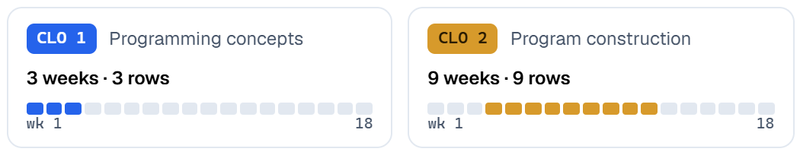
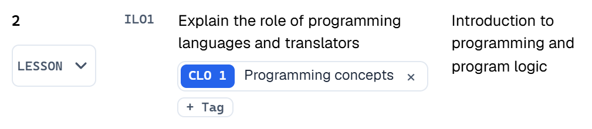
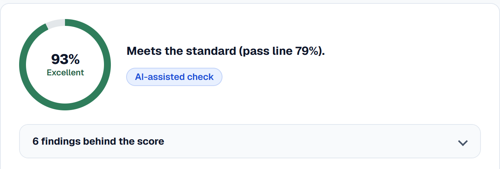
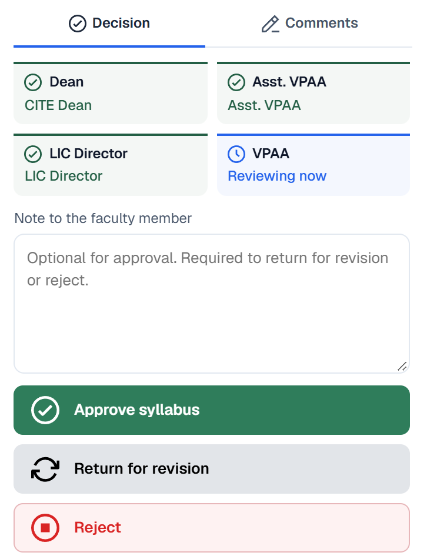
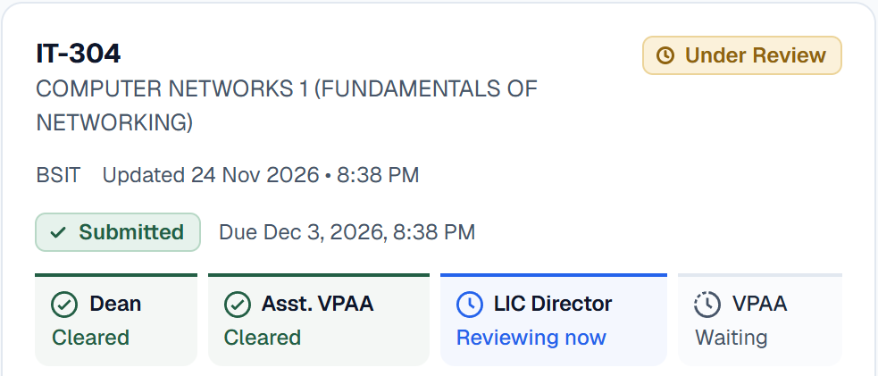
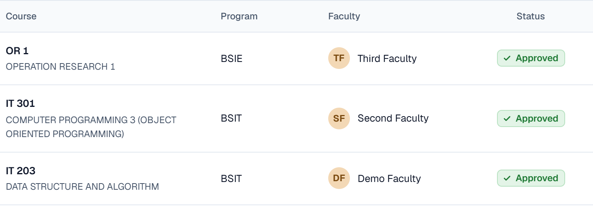

To standardize how course syllabi are prepared, checked, reviewed, approved, and stored.
The faculty, academic officers, and students of the college department.
The seven-step Syllabus Builder fills in official course data and saves drafts automatically. Faculty can also import a PDF or start from a draft made by the AI Syllabus Generator.


Coded rules stop a syllabus with missing sections or a grading total other than 100%. The AI-assisted Checker reviews alignment from graduate attributes to weekly tasks, gives a score, and suggests revisions to accept, edit, or reject. AI advises; people decide.

The Dean, Asst. VPAA, and LIC Director clear their stages in order. Only the VPAA approves. A returned syllabus goes back to the reviewer who returned it.


Approved syllabi stay in a searchable repository with version history. Dashboards, analytics, and CSV or DOCX reports show progress.

Also built in: deadlines and reminders, messaging, notifications, audit log, role-based access, COR-verified student registration, English and Filipino, desktop and mobile.